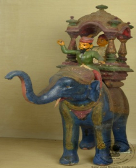

🔇 Is bhasha me is vastu ka audio abhi uplabdh nahi hai.
7. XLII - 48: एक हाथी, हाथी सवार (महावत), और एक कुलीन व्यक्ति

7. XLII - 48
एक भारतीय कुलीन व्यक्ति हाथी की हौदे (howdah) में बैठा है, उसके साथ एक महावत है। महावत, जो हाथी चलाने वाला होता है, भारतीय कला और ऐतिहासिक संदर्भों में सामान्य रूप से दर्शाया जाता है और अक्सर शक्ति और स्थिति का प्रतीक होता है। हौदे, हाथी की पीठ पर लगी संरचना होती है, जो कुलीन व्यक्ति के लिए आरामदायक सीट और ऊँचा मंच प्रदान करती थी, जबकि महावत हाथी को मार्गदर्शन देता था। यह आकृति एक भारतीय कुलीन व्यक्ति को महावत के साथ हाथी पर दर्शाती है और शक्ति, प्रतिष्ठा और राजशाही का प्रतीक है। हाथियों का अक्सर शाही शोभायात्राओं और समारोहों में उपयोग किया जाता था, और हौदे धन और अधिकार का प्रदर्शन करने के लिए एक मंच के रूप में काम करता था। यह आकृति यूके के राष्ट्रीय सेना संग्रहालय में देखी जा सकती है, जिसमें हाथी पर हौदे में बैठे भारतीय कुलीन व्यक्ति की पेंटिंग प्रदर्शित है। इसका उद्गम भारत से हुआ था और यह 20वीं शताब्दी का है।
7. XLII - 48: An Elephant, Mahout and a Noble Man
7. XLII - 48
An Indian nobleman is seated in the howdah of an elephant, accompanied by a mahout. The mahout, who drives the elephant, is commonly depicted in Indian art and historical contexts and is often a symbol of power and status. The howdah, a structure mounted on the elephant's back, provided the nobleman with a comfortable seat and an elevated platform while the mahout guided the elephant. This figure depicts an Indian nobleman with a mahout upon an elephant and stands as a symbol of power, prestige and royalty. Elephants were often used in royal processions and ceremonies, and the howdah served as a platform for displaying wealth and authority. A comparable figure can be seen at the National Army Museum in the UK, which displays a painting of an Indian nobleman seated in a howdah on an elephant. It originates from India and dates to the 20th century.
7. XLII - 48: ఏనుగు, మావటి, ఒక గొప్ప మనిషి
7. XLII - 48
ఈ బొమ్మ 20వ శతాబ్దానికి చెందిన భారతీయ కళాఖండం. ఇందులో ఒక భారతీయ సాంప్రదాయ శైలోలో ఉన్నత స్థాయి వ్యక్తి (nobleman) ఏనుగు పైన అమర్చబడిన అంబారీలో (howdah) కూర్చుని ఉండగా, మావటి అతనికి తోడుగా కనిపిస్తాడు. మావటి ఏనుగును నడిపితే, అంబారీ గొప్ప వ్యక్తికి సౌకర్యవంతమైన ఆసనాన్ని మరియు ఎత్తైన వేదికను అందించింది. భారతీయ కళా మరియు చారిత్రక సందర్భాలలో, అధికారం, హోదా మరియు రాజరికానికి చిహ్నంగా ఏనుగుపై గొప్ప మనిషిని చూపించడం సర్వసాధారణం. ఏనుగులను తరచుగా రాజ ఊరేగింపులు మరియు వేడుకలలో ఉపయోగించేవారు, మరియు అంబారీ సంపద మరియు అధికారాన్ని ప్రదర్శించడానికి ఒక వేదికగా ఉండేది. ఇలాంటి బొమ్మలు లేదా చిత్రాలను UKలోని నేషనల్ ఆర్మీ మ్యూజియంలో కూడా చూడవచ్చు.
6. MS - 4822: ஒரு துறவியின் உருவம் (FIGURE OF A SAINT)
6. MS - 4822
“ஒருஇந்தியஅரசகுடிமனிதர்யானையின்முதுகில்பொருத்தப்பட்ட‘ஹௌடா’ எனப்படும் அம்பாரியில் அமர்ந்திருப்பதுபோல்சித்தரிக்கப்பட்டுள்ளார்; அவருடன்யானையைநடத்தும்மாவுத்தும் காணப்படுகிறார். ‘மாவூத்’ என்பதுயானையைபயிற்றுவித்துநடத்தும்நபரைகுறிக்கும்சொல். இந்தியக்கலைமற்றும்வரலாற்றுச்சூழல்களில்இவ்வகைகாட்சிபெரும்பாலும்அதிகாரத்தையும்சமூகமரியாதையையும்குறிக்கும்ஒருசின்னமாகக்கருதப்படுகிறது.யானையின்முதுகில்பொருத்தப்படும் ‘அம்பாரி’ என்பதுஉயரமானஇருக்கைஅல்லதுமேடைபோன்றஅமைப்பாகும்; இதுஅரசகுடியினருக்குவசதியானஅமர்விடத்தையும்உயர்ந்தமேடையையும்வழங்கியது. அதேநேரத்தில்மாவூத்யானையைவழிநடத்தினார்.இந்தஉருவச்சிலை, மாவூத்துடன்யானையின்மேல்அமர்ந்துள்ளஇந்தியஅரசகுடிமனிதரைகாட்டுகிறது; இதுஅதிகாரம், பெருமைமற்றும்அரசமரபைகுறிக்கும்ஒருஅடையாளமாகும். பழங்காலத்தில்யானைகள்அரசஊர்வலங்களிலும்விழாக்களிலும்பெரிதும்பயன்படுத்தப்பட்டன; அப்போதுஅம்பாரிசெல்வச்செழிப்பையும்ஆட்சிசக்தியையும்வெளிப்படுத்தும்மேடையாகஇருந்தது.இவ்வகைகாட்சிகொண்டஓவியம்இங்கிலாந்தின்தேசியஇராணுவஅருங்காட்சியகத்திலும்காணப்படுகிறது. இந்தஉருவச்சிலைஇந்தியாவைச்சேர்ந்தது; இது 20ஆம்நூற்றாண்டைச்சேர்ந்ததாகக்கருதப்படுகிறது.”
7. XLII - 48: एक हत्ती, माहूत आणि एक कुलीन व्यक्ती
7. XLII - 48
एक भारतीय कुलीन व्यक्ती हत्तीच्या हौद्यात (howdah) बसली असून त्यांच्यासोबत एक माहूत आहे. हत्ती हाकणारा माहूत भारतीय कला व ऐतिहासिक संदर्भांत सर्रास दाखवला जातो आणि तो अनेकदा सामर्थ्य व प्रतिष्ठेचे प्रतीक असतो. हौदा ही हत्तीच्या पाठीवर बसवलेली रचना असते, जी कुलीन व्यक्तीसाठी आरामदायक आसन आणि उंच मंच पुरवत असे, तर माहूत हत्तीला मार्गदर्शन करत असे. ही आकृती माहूतासह हत्तीवर बसलेल्या भारतीय कुलीन व्यक्तीचे चित्रण करते आणि सामर्थ्य, प्रतिष्ठा व राजेशाहीचे प्रतीक आहे. हत्तींचा वापर अनेकदा राजेशाही मिरवणुका व समारंभांत केला जात असे आणि हौदा हे संपत्ती व अधिकार दाखवण्याचे व्यासपीठ म्हणून काम करत असे. ही आकृती यूकेच्या राष्ट्रीय सैन्य संग्रहालयात पाहता येते, जिथे हत्तीवरील हौद्यात बसलेल्या भारतीय कुलीन व्यक्तीचे चित्र प्रदर्शित आहे. याचे उगमस्थान भारत असून ते २०व्या शतकातील आहे.
7. XLII-48: ഒരു ആന, ആനപ്പാപ്പാൻ, പിന്നെ ഒരു പ്രഭുവും
7. XLII-48
7. XLII-48: ഒരു ആന, ആനപ്പാപ്പാൻ, പിന്നെ ഒരു പ്രഭുവും
7. XLII-48: ಅನ್ ಎಲಿಫೆಂಟ್, ಮಹೌಟ್, ಎ ನೋಬಲ್ ಮ್ಯಾನ್
7. XLII-48
ಆನೆಯ ಅಂಬಾರಿಯಲ್ಲಿ ಕುಳಿತಿರುವ ಮತ್ತು ಜೊತೆಯಲ್ಲಿ ಮಾವುತನನ್ನು ಹೊಂದಿರುವ ಭಾರತೀಯ ಗಣ್ಯವ್ಯಕ್ತಿಯ ಶಿಲ್ಪ ಕಲಾಕೃತಿ ಇದು. ಆನೆಯನ್ನು ಮುನ್ನಡೆಸುವವನಿಗೆ ಮಾವುತ ಎಂದು ಕರೆಯಲಾಗುತ್ತದೆ. ಭಾರತೀಯ ಕಲೆ ಮತ್ತು ಐತಿಹಾಸಿಕ ಹಿನ್ನೆಲೆಗಳಲ್ಲಿ ಈ ದೃಶ್ಯವು ಸಾಮಾನ್ಯವಾಗಿದ್ದು, ಇದು ಹೆಚ್ಚಾಗಿ ಅಧಿಕಾರ ಮತ್ತು ಸ್ಥಾನಮಾನವನ್ನು ಸಂಕೇತಿಸುತ್ತದೆ.ಅಂಬಾರಿಯು ಆನೆಯ ಬೆನ್ನಿನ ಮೇಲೆ ಕೂರಿಸಲಾಗುವ ಒಂದು ರಚನೆಯಾಗಿದ್ದು, ಇದು ಗಣ್ಯವ್ಯಕ್ತಿಗೆ ಆರಾಮದಾಯಕವಾದ ಆಸನ ಮತ್ತು ಎತ್ತರದ ವೇದಿಕೆಯನ್ನು ಒದಗಿಸುತ್ತಿತ್ತು, ಅದೇ ಸಮಯದಲ್ಲಿ ಮಾವುತನು ಆನೆಯನ್ನು ಮುನ್ನಡೆಸುತ್ತಿದ್ದನು. ಮಾವುತನೊಂದಿಗೆ ಆನೆಯ ಮೇಲಿರುವ ಭಾರತೀಯ ಗಣ್ಯವ್ಯಕ್ತಿಯನ್ನು ತೋರಿಸುವ ಈ ಶಿಲ್ಪ ಕಲಾಕೃತಿಯು ಅಧಿಕಾರ, ಸ್ಥಾನಮಾನ ಮತ್ತು ರಾಜವೈಭವವನ್ನು ಸಂಕೇತಿಸುತ್ತದೆ.ಆನೆಗಳನ್ನು ಹೆಚ್ಚಾಗಿ ರಾಜಮನೆತನದ ಮೆರವಣಿಗೆಗಳು ಮತ್ತು ಸಮಾರಂಭಗಳಲ್ಲಿ ಬಳಸಲಾಗುತ್ತಿತ್ತು ಹಾಗೂ ಅಂಬಾರಿಯು ಸಂಪತ್ತು ಮತ್ತು ಅಧಿಕಾರದ ಪ್ರದರ್ಶನದ ವೇದಿಕೆಯಾಗಿ ಕಾರ್ಯನಿರ್ವಹಿಸುತ್ತಿತ್ತು. ಯುನೈಟೆಡ್ ಕಿಂಗ್ಡಮ್ನ ನ್ಯಾಷನಲ್ ಆರ್ಮಿ ಮ್ಯೂಸಿಯಂನಲ್ಲಿ ಅಂಬಾರಿಯೊಂದಿಗೆ ಆನೆಯ ಮೇಲಿರುವ ಭಾರತೀಯ ಗಣ್ಯವ್ಯಕ್ತಿಯ ವರ್ಣಚಿತ್ರವನ್ನು ಸಹ ಕಾಣಬಹುದು. ಭಾರತದಲ್ಲಿಯೇ ರೂಪುಗೊಂಡಿರುವ ಇದು 20ನೇ ಶತಮಾನದಷ್ಟು ಹಳೆಯದಾಗಿದೆ.
7. XLII-48: ହାତୀ, ହାତୀଚାଳକ (ମାହୁତ୍ତ) ଏବଂ ଜଣେ ସମ୍ମାନୀୟ ବ୍ୟକ୍ତି
7. XLII-48
ଜଣେ ଭାରତୀୟ କୁଳୀନ ବ୍ୟକ୍ତି, ହାତୀର ହାଉଡା ଉପରେ ବସିଛନ୍ତି, ତାଙ୍କ ସହିତ ଜଣେ ମାହୁତ୍ତ ଅଛନ୍ତି। ମାହୁତ୍ତ ହେଉଛନ୍ତି ହାତୀ ଚାଳକ, ଯିଏ ଭାରତୀୟ କଳା ଏବଂ ଐତିହାସିକ ପ୍ରସଙ୍ଗରେ ଜଣେ ସାଧାରଣ ଚରିତ୍ର, ପ୍ରାୟତଃ ଶକ୍ତି ଏବଂ ପ୍ରତିଷ୍ଠାର ପ୍ରତୀକ ଭାବରେ ଚିତ୍ରିତ। ହାତୀଚାଳକହାତୀକୁଚଲାଇବା ବେଳେହାତୀର ପିଠିରେ ରଖାଯାଇଥିବା ହାଉଡା ନାମକଆରାମଦାୟକ ଉଚ୍ଚମଞ୍ଚ ପରି ଆସନ ଉପରେ, କୁଳୀନ ବ୍ୟକ୍ତି ଆରୋହଣ କରିବାର ଦୃଶ୍ୟ ଏଥିରେ ଦର୍ଶାଯାଇଛି। ଏହି ମୂର୍ତ୍ତିରେ ଜଣେ ଭାରତୀୟ ସମ୍ଭ୍ରାନ୍ତ ବ୍ୟକ୍ତିଙ୍କ ସହହାତୀଚାଳକକୁ ହାତୀ ଉପରେ ବସିଥିବା ଦୃଶ୍ୟରୁ ଶକ୍ତି, ପ୍ରତିଷ୍ଠା ଏବଂ ରାଜକୀୟତାର ପ୍ରତୀକ ଅନୁଭବ ହୋଇଥାଏ।ହାତୀମାନଙ୍କୁ ପ୍ରାୟତଃ ରାଜକୀୟ ଶୋଭାଯାତ୍ରା ଏବଂ ସମାରୋହରେ ବ୍ୟବହାର କରାଯାଉଥିଲା, ଏବଂ ହାଓଡ଼ା ଧନ ଓ କର୍ତ୍ତୃତ୍ୱ ପ୍ରଦର୍ଶନର ଏକ ମଞ୍ଚ ଭାବରେ କାର୍ଯ୍ୟ କରୁଥିଲା। ଏହି ଆକୃତିକୁ ନେଇ ବ୍ରିଟେନର ଜାତୀୟ ସେନା ସଂଗ୍ରହାଳୟରେ ଏକ ଚିତ୍ର ପ୍ରଦର୍ଶିତ ହୋଇଛି, ଯେଉଁଠାରେ ଜଣେ ଭାରତୀୟ କୁଳୀନ ବ୍ୟକ୍ତି ହାତୀରହାଓଡ଼ା ଉପରେ ଆରୋହଣ କରିଛନ୍ତି। ଏହାର ନିର୍ମାଣ ଭାରତରେ ହୋଇଥିଲା ଏବଂ ଏହା 20ଶ ଶତାବ୍ଦୀର ଅଟେ।
7. XLII - 48: হস্তী, মাহুত এবং একজন সম্ভ্রান্ত ব্যক্তি
7. XLII - 48
একজন ভারতীয় সম্ভ্রান্ত ব্যক্তি, যিনি মাহুতসহ হাতির পিঠের হাওদায় উপবিষ্ট আছেন। মাহুত হলো হাতির চালক। এটি ভারতীয় শিল্পকলা এবং ঐতিহাসিক প্রেক্ষাপটে একটি সাধারণ চিত্রায়ন, যা প্রায়শই ক্ষমতা ও মর্যাদার প্রতীক রূপেপ্রদর্শিত হয়। হাওদা হলো হাতির পিঠের ওপর স্থাপিত একটি বিশেষ কাঠামো, যা সম্ভ্রান্ত ব্যক্তির জন্য আরামদায়ক আসন ও একটি উচ্চতর মঞ্চ প্রদান করত, যেখান থেকে মাহুত হাতিটিকে পরিচালনা করত। এই মূর্তিতে মাহুতসহ হাতির ওপর ভারতীয় সম্ভ্রান্ত ব্যক্তির উপস্থিতি মূলত শক্তি, প্রতিপত্তি এবং রাজকীয় আভিজাত্যের প্রতিফলন। হাতি প্রায়শই রাজকীয় শোভাযাত্রা ও বিভিন্ন অনুষ্ঠানে ব্যবহৃত হতো এবং হাওদা সম্পদ ও কর্তৃত্ব প্রদর্শনের একটি মাধ্যম হিসেবে কাজ করত। এই ধরনের শিল্পকর্ম যুক্তরাজ্যের 'ন্যাশনাল আর্মি মিউজিয়ামে' সংরক্ষিত রয়েছে, যেখানে হাওদাসহ হাতির ওপর সম্ভ্রান্ত ভারতীয় ব্যক্তির একটি চিত্রকর্ম বিদ্যমান। এর উৎপত্তি ভারতবর্ষে এবং এটি ২০ শতকেরএকটি নিদর্শন।
7. ایکس ایلII-48ایکہاتھی،مہاوت،ایکشریف زادہ
7. ایکس ایلII-48ایکہاتھی،مہاوت،ایکشریف زادہ
ایک ہندوستانیشریف زادہ، ہاتھی کی پیٹھ پر لگے ہودج میں بیٹھا ہوا، جس کے ساتھ ایک فیل بان بھی موجود ہے۔ فیل بان، ہاتھی چلانے والا ہوتا ہے، اور یہ ہندوستانی فن اور تاریخی تناظر میں عام طور پر دکھایا جاتا ہے، جو طاقت اور مرتبے کی علامت ہے۔ ہودج، ہاتھی کی پیٹھ پر نصب ایک ساخت ہوتی ہے، جو شریف زادہ کے لیے آرام دہ نشست اور بلند پلیٹ فارم فراہم کرتی ہے، جبکہ فیل بان ہاتھی کی رہنمائی کرتا ہے۔ یہ مجسمہ ہندوستانی شریف زادہ کو ہاتھی کے ساتھ فیل بان کے ہمراہ دکھاتا ہے، جو طاقت، مرتبے اور شاہی حیثیت کی علامت ہے۔ ہاتھیوں کا استعمال اکثر شاہی جلوسوں اور تقریبات میں کیا جاتا تھا، اور ہودج دولت اور اختیار کے مظاہرے کے لیے پلیٹ فارم کا کام دیتا تھا۔ یہ مجسمہ برطانیہ کے نیشنل آرمی میوزیم میں دیکھا جا سکتا ہے، جس میں ہاتھی کے ہودج پر بیٹھے ہندوستانی شریفزادہ کی تصویر موجود ہے۔ یہ ہنوستان سے تعلق رکھتا ہے اور یہ 20ویں صدی کا ہے۔
7. XLII-48: હાથી, મહાવત, એક સજ્જન
7. XLII-48
એક ભારતીય સજ્જન મહાવત સાથે હાથીની અંબાડી પર બેઠેલો છે. મહાવત એટલે હાથીનો ચાલક, આ ભારતીય કળા અને ઐતિહાસિક સંદર્ભોમાં એક સામાન્ય ચિત્રણ છે, જે મુખ્યતાએ શક્તિ અને માન-મોભાનું પ્રતીક છે. હાથીની પીઠ પર મુકવામાં આવેલ અંબાડીનું માળખું સજ્જન-કુલીનો માટે આરામદાયક બેઠક અને ઊંચું સ્થાન પૂરું પાડતું, જ્યારે મહાવત હાથીને માર્ગદર્શન આપતો. આ આકૃતિ એક ભારતીય સજ્જનને મહાવત સાથે હાથી પર સવાર દર્શાવવામાં આવ્યો છે અને તે શક્તિ, સત્તા અને રાજવીપણાનું પ્રતીક છે. હાથીઓનો ઉપયોગ ઘણીવાર શાહી સરઘસો અને સમારંભોમાં થતો હતો, અને અંબાડી સંપત્તિ અને સત્તાના પ્રદર્શન માટે એક મંચ તરીકે કામ કરતો હતો. આ આકૃતિ યુકેના રાષ્ટ્રીય સૈન્ય સંગ્રહાલયમાં જોઈ શકાય છે, જેમાં અંબાડી સાથે હાથી પર બેઠેલા ભારતીય સજ્જનનું ચિત્ર છે. તેની ઉત્પત્તિ ભારતમાં થઇ છે અને તે 20મી સદીનું છે.